|
Shihao Zhou (周世豪)
I am a final-year PhD student at Nankai University where I am advised by Prof. Jufeng Yang. I am very fortunate to be co-advised by Prof. Jinshan Pan of Nanjing University of Science and Technology.
I am interested in 3D Computer Vision and Low-level Vision problems.
Email /
CV /
Bio /
Google Scholar /
Github /
Dataset
|
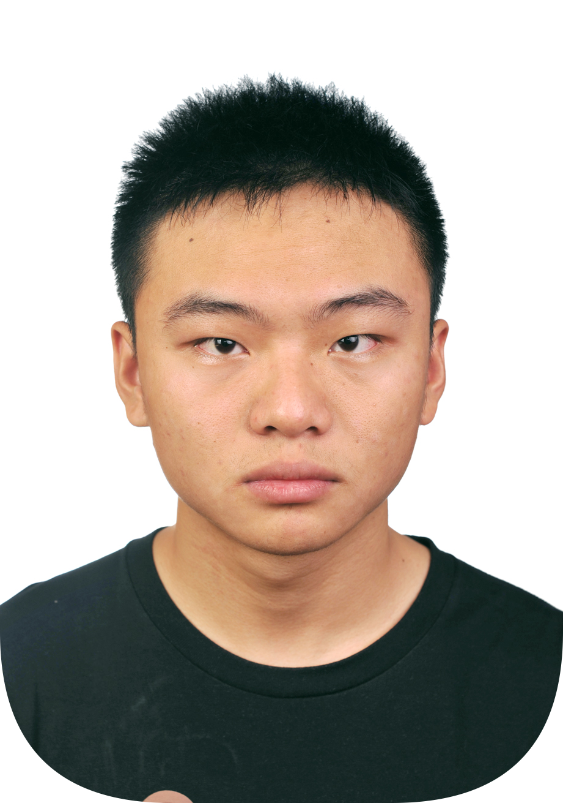
|
News
[Apr , 2026] HIT is accepted by TIP 2026. Jittorr-based Implementation is available.
[Feb , 2026] Flickerformer is accepted by CVPR 2026. Congrats to Lishen.
[Sep , 2025] BurstDeflicker and FlareX are accepted by NeurIPS 2025. Congrats to Lishen.
[Aug , 2025] Won 3rd Place in ICCV@MIPI 2025 Challenge on Aberration Correction for Mass-Produced Mobile Cameras.
[Aug , 2025] ASTv2 is accepted by TPAMI 2025. Hugging Face Demo, Jittorr-based Implementation, and 中译版 are available.
[Jun , 2025] HINT is accepted by ICCV 2025. Hugging Face Demo, Jittorr-based Implementation, and 中译版 are available.
[Jun , 2025] I am recognized as one of the Outstanding Reviewers for CVPR 2025 (711/12593, 5.6%).
[Feb , 2025] MDT is accepted by CVPR 2025. Congrats to Duosheng.
[Jul , 2024] FPro is accepted by ECCV 2024. Hugging Face Demo and Jittorr-based Implementation are available.
[Feb , 2024] AST is accepted by CVPR 2024. Hugging Face Demo and Jittorr-based Implementation are available.
|
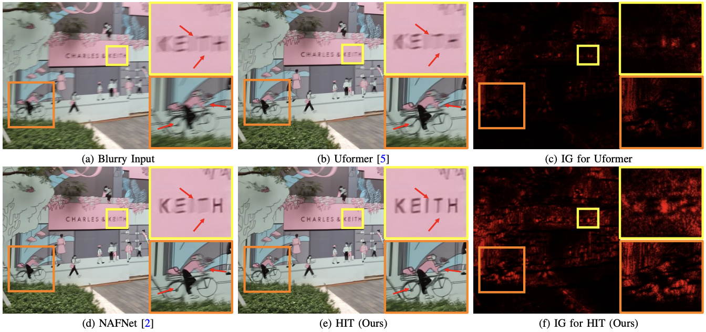
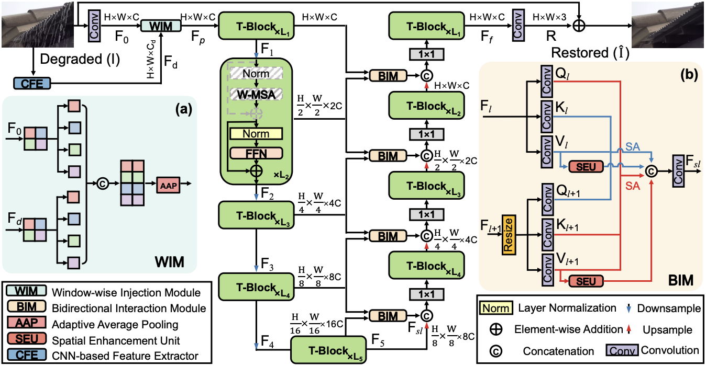
Rethinking the Importance of High-frequency Components in Transformers for Image Restoration
IEEE Transactions on Image Processing (TIP), 2026
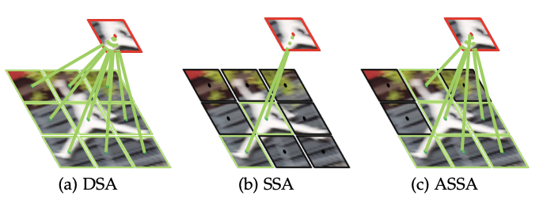
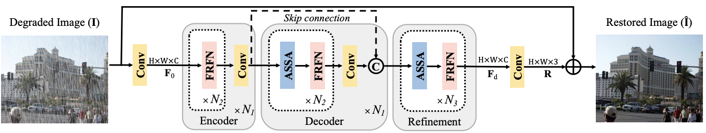
Learning An Adaptive Sparse Transformer for Efficient Image Restoration
IEEE Transactions on Pattern Analysis and Machine Intelligence (TPAMI), 2025

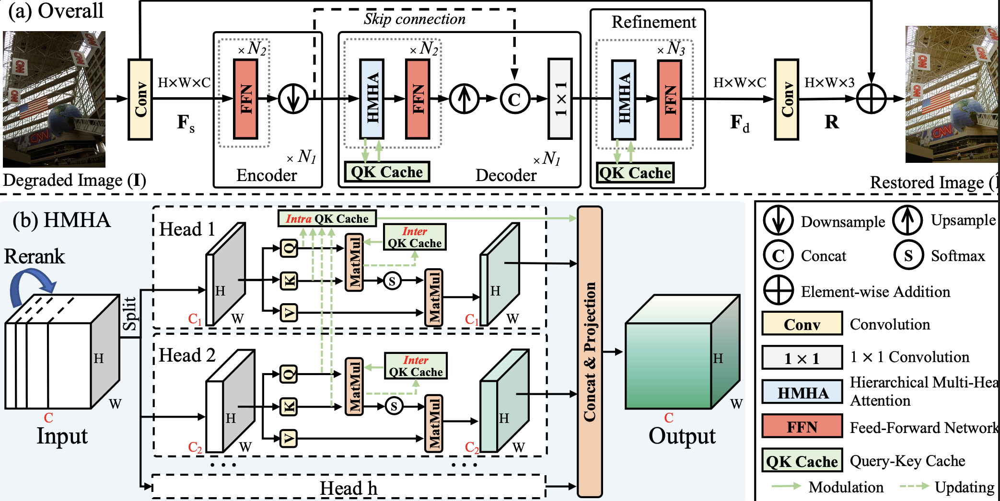
Devil is in the Uniformity: Exploring Diverse Learners within Transformer for Image Restoration
IEEE/CVF International Conference on Computer Vision (ICCV), 2025
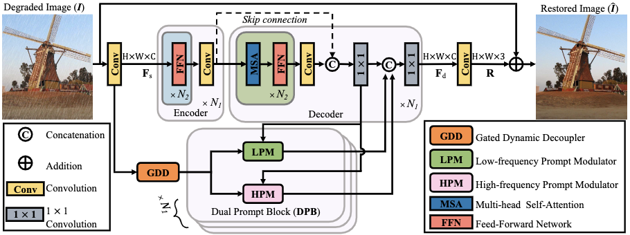
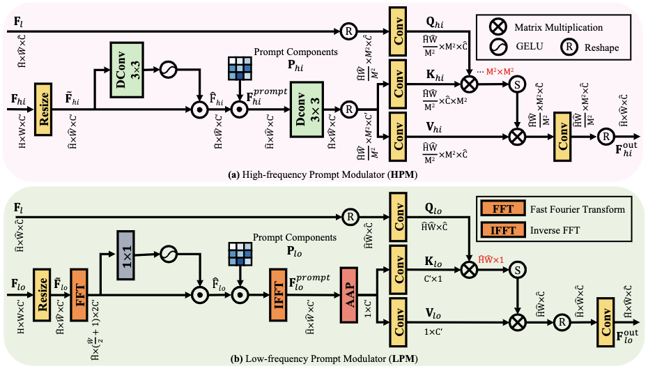
Seeing the Unseen: A Frequency Prompt Guided Transformer for Image Restoration
European Conference on Computer Vision (ECCV), 2024

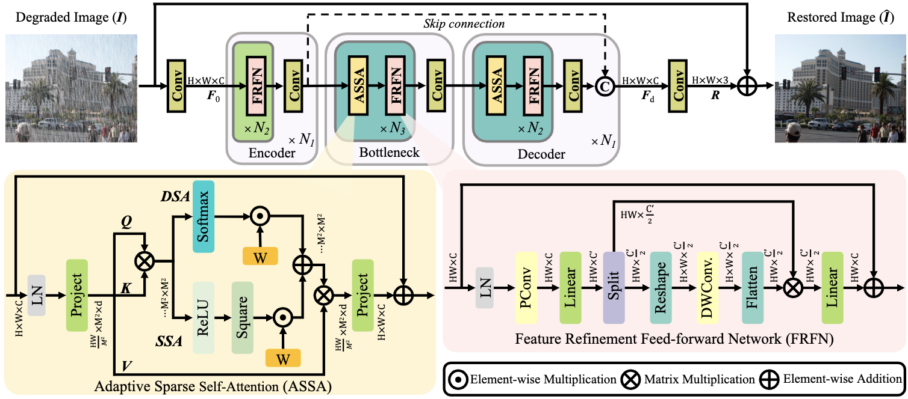
Adapt or Perish: Adaptive Sparse Transformer with Attentive Feature Refinement for Image Restoration
IEEE/CVF Conference on Computer Vision and Pattern Recognition (CVPR), 2024
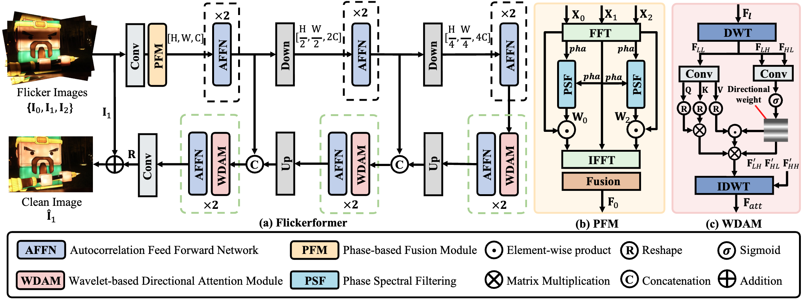

It Takes Two: A Duet of Periodicity and Directionality for Burst Flicker Removal
IEEE/CVF Conference on Computer Vision and Pattern Recognition (CVPR), 2026
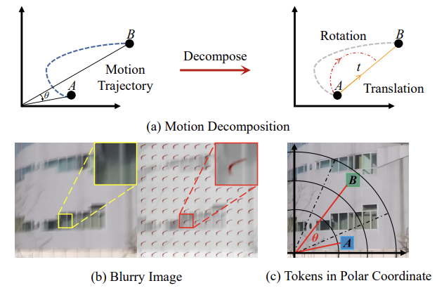
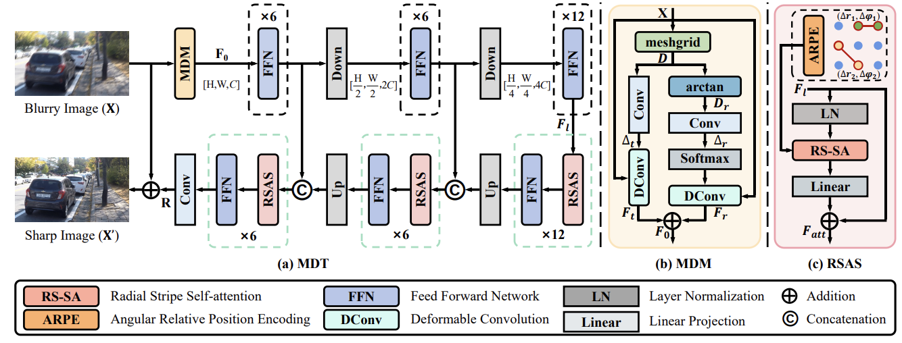
A Polarization-aided Transformer for Image Deblurring via Motion Vector Decomposition
IEEE/CVF Conference on Computer Vision and Pattern Recognition (CVPR), 2025
(Highlight)
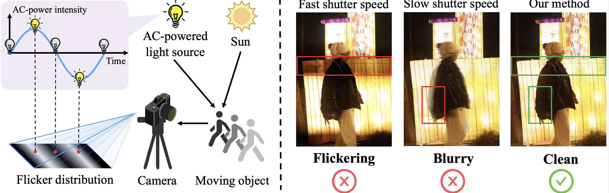
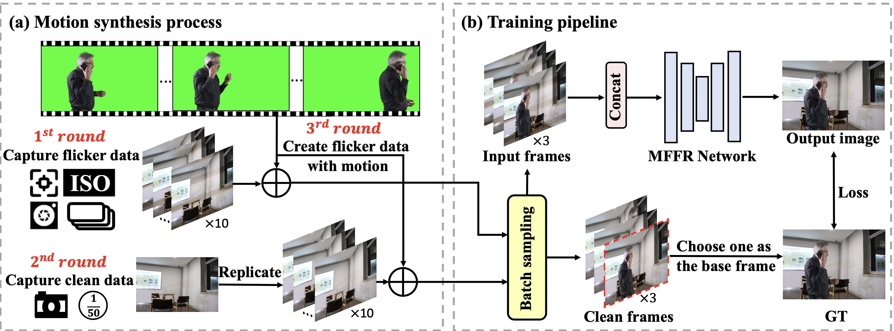
BurstDeflicker: A Benchmark Dataset for Flicker Removal in Dynamic Scenes
Annual Conference on Neural Information Processing Systems (NeurIPS), 2025
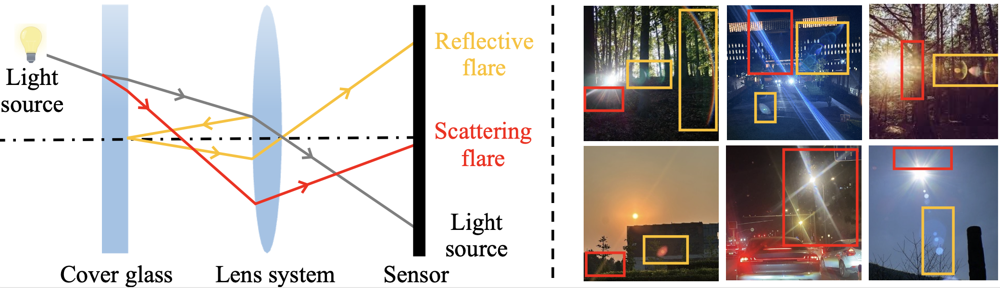
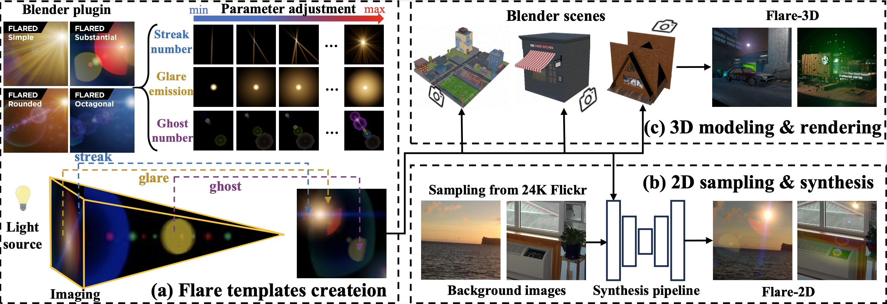
FlareX: A Physics-Informed Dataset for Lens Flare Removal via 2D Synthesis and 3D Rendering
Annual Conference on Neural Information Processing Systems (NeurIPS), 2025
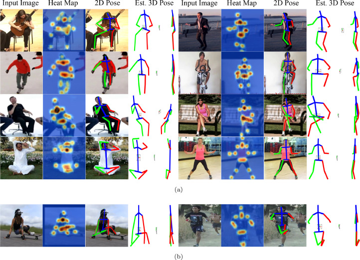
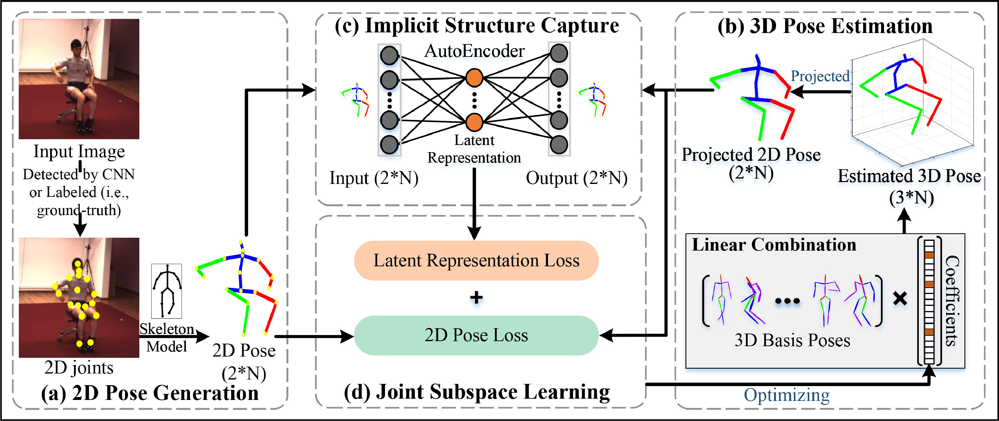
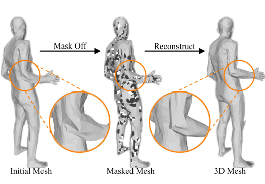
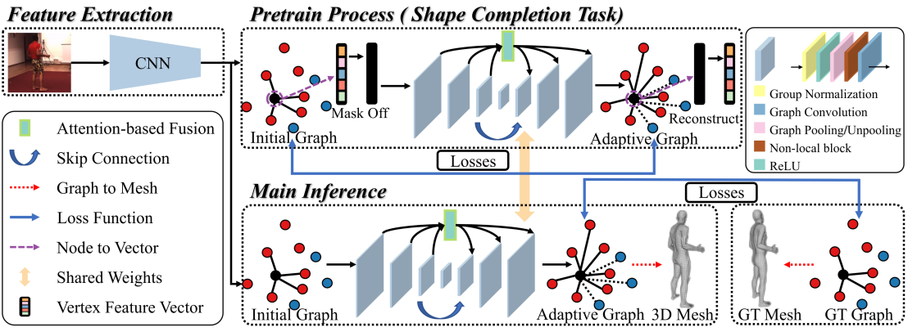
Fundings
2024 National Natural Science Foundation (NSFC) Youth Basic Research Project (PhD). [国家自然科学基金青年学生基础研究项目]
2025 Young Elite Scientists Sponsorship Program by the China Association for Science and Technology (CAST). [中国科协青年科技人才培育工程博士生专项计划]
|
Academic Services
Journal Reviewer:
- IEEE Transactions on Pattern Analysis and Machine Intelligence (TPAMI)
- International Journal of Computer Vision (IJCV)
- IEEE Transactions on Image Processing (TIP)
- IEEE Transactions on Multimedia (TMM)
- Computer Vision and Image Understanding (CVIU)
- Knowledge-Based Systems (KBS)
- IET Image Processing (IET-IPR)
- MultiMedia Tools and Applications (MTA)
- SN Computer Science (SN Comput Sci)
- Imaging Science Journal (Imaging Sci. J)
- Jordanian Journal of Computers and Information Technology (JJCIT)
Conference Reviewer:
- Annual Conference on Neural Information Processing Systems (NeurIPS)
- IEEE Conference on Computer Vision and Pattern Recognition (CVPR)
- IEEE International Conference on Computer Vision (ICCV)
- European Conference on Computer Vision (ECCV)
- ACM International Conference on Multimedia (ACM MM)
- Medical Image Computing and Computer-Assisted Intervention (MICCAI)
- IEEE International Conference on Multimedia & Expo (ICME)
- IEEE International Conference on Acoustics, Speech and Signal Processing (ICASSP)
- ACM Multimedia Asia (MMAsia)
- Chinese Conference on Pattern Recognition and Computer Vision (PRCV)
|
|
‘Whether I shall turn out to be the hero of my own life,
or whether that station will be held by anybody else,
these pages must show ‘
|
|